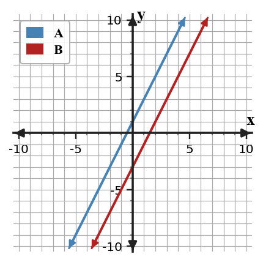
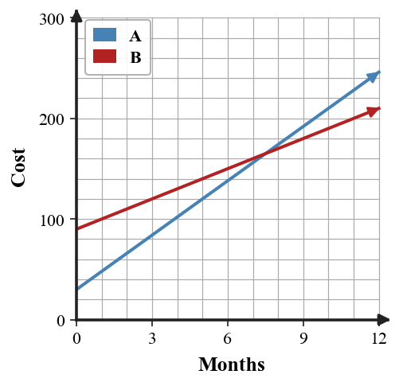

3-S1-DOK1.01
For the system $y=2x+1$ and $y=-x+7$, what does the ordered pair where the two lines cross represent?
This bank supports systems of equations, substitution, contextual modeling, graphing linear inequalities, and systems of inequalities through DOK 1-4 practice.
Learning Target: Students will solve systems graphically and by elimination while interpreting the meaning of different solution types.
For the system $y=2x+1$ and $y=-x+7$, what does the ordered pair where the two lines cross represent?
Does $(3,1)$ satisfy both equations in the system $x+y=4$ and $2x-y=5$? State yes or no and name the equation that proves your answer.
The equations $y=4x-3$ and $y=4x+2$ have the same slope and different $y$-intercepts. Classify the solution type.
The equations $y=-2x+5$ and $2y+4x=10$ represent the same line. Classify the solution type.
In elimination, which variable is ready to eliminate in the system $3x+2y=11$ and $-3x+5y=10$?
For the system $4x-y=9$ and $2x+y=3$, which operation would eliminate $y$ first?
Fisher says any two nonvertical lines must intersect. Give the one condition on two different nonvertical lines that makes his claim false.
When a graph of a system shows one intersection point, how many ordered-pair solutions does the system have?
When elimination produces the statement $0=7$, what solution type should be reported?
When elimination produces the statement $0=0$, what solution type should be reported?
Which form is usually most convenient for graphing quickly: $y=mx+b$ or $Ax+By=C$? Explain in one sentence.
For $x=3$ and $y=-2$, state the point of intersection as an ordered pair.
Which pair of coefficients is already arranged for elimination: $5y$ and $-5y$, or $5y$ and $2y$?
A solution to a system must make how many equations true?
For $2x+3y=12$, what coefficient would the second equation need on $y$ so adding the equations could eliminate $y$ immediately?
What graph feature tells you that a system has no solution?
Graph the system on the same axes, then state the point of intersection.

Set the two expressions equal to predict the intersection, then graph the lines on the same axes to check your ordered pair.
Solve the system by elimination and check your ordered pair in both equations.
$$\begin{aligned}x+5y=8\\-x+2y=-1\end{aligned}$$Use equation structure to predict whether elimination will produce an ordered pair, a contradiction, or an identity; then solve to confirm the solution type.
$$\begin{aligned}4x-2y=5\y=2x+10\end{aligned}$$Solve the system. Then write one sentence explaining what the graph of the two equations would look like.
$$\begin{aligned}y=3x+2\\6x-2y=8\end{aligned}$$Use algebra to determine the solution type for the system. Then describe what the graph would show and why.
$$\begin{aligned}y=-2x+5\\2y+4x=10\end{aligned}$$Use elimination to find the intersection point of the lines.
$$\begin{aligned}x=-2y-3\\4y-x=9\end{aligned}$$Choose whether to multiply the first equation, second equation, or neither before eliminating. Then solve.
$$\begin{aligned}2x+3y=18\\5x-3y=10\end{aligned}$$Use the graph to estimate the solution, then verify it algebraically using the equations for lines A and B.

The graph shows two lines labeled A and B. Estimate the slope and y-intercept of each line from the graph, then write the solution-type statement and justify it with slope/intercept language.

The graph shows lines A and B. Use at least two visible points on the displayed line(s) to decide the solution type and explain what every point on the shared graph means.

Solve the system and label the solution type.
$$\begin{aligned}3x+4y=2\\6x+8y=5\end{aligned}$$A student solves the system below by adding the equations and says the solution is $y=5$.
$$\begin{aligned}2x+3y=16\\-2x+y=4\end{aligned}$$Critique the student's conclusion. Identify the missing step and give the complete ordered-pair solution.
Analyze the system without graphing it first.
$$\begin{aligned}4x-6y=12\\-2x+3y=-6\end{aligned}$$Use equation structure to decide the solution type, then explain what the graph would show.
For the system below, compare graphing and elimination as solving methods.
$$\begin{aligned}y=-x+8\\3x+3y=24\end{aligned}$$Which method is more efficient, and how does the structure of the equations support your choice?
The table gives values for two lines at selected $x$-values. The system is $y_A=2x-1$ and $y_B=-x+8$.
| $x$ | 1 | 2 | 3 | 4 |
|---|---|---|---|---|
| $y_A$ | 1 | 3 | 5 | 7 |
| $y_B$ | 7 | 6 | 5 | 4 |
Use the table and the equations to identify the solution and explain why both representations agree.
A school fundraiser can rent Table Plan A for \$40 plus \$6 per table or Table Plan B for \$16 plus \$9 per table.
Two students solve the same system.
$$\begin{aligned}5x+2y=31\x-2y=5\end{aligned}$$Maya wants to graph both lines. Luis wants to add the equations immediately. Recommend one approach for a 3-minute paper-only quiz and justify your recommendation with structure from the equations.
Learning Target: Students will solve systems using substitution and choose efficient forms for solving.
In the system $y=3x-4$ and $2x+y=11$, which expression should replace $y$ during substitution?
In the system $x=2y+5$ and $3x-y=20$, which expression should replace $x$ during substitution?
Which equation is already solved for a variable: $4x+y=9$ or $y=-2x+7$?
After substituting $y=x+6$ into $2x+y=15$, what one-variable equation should be solved?
Does $(2,7)$ satisfy the equation $y=3x+1$?
Does $(4,-1)$ satisfy both $x+y=3$ and $y=-x+3$?
What is the first algebraic goal after substituting one expression into the other equation?
Why is substitution efficient when one equation is $x=8-y$?
Which variable is isolated in $3x+y=14$ after rewriting it as $y=14-3x$?
When substitution gives $6=6$, what solution type should be reported?
When substitution gives $-2=5$, what solution type should be reported?
For $y=-4x+2$, what expression should replace $y$ in another equation?
For $a=b+9$, what expression can replace $a$ in a second equation?
Which system is more substitution-ready: $y=2x+1$ with $x+y=10$, or $3x+2y=12$ with $5x-y=1$?
After finding $x=5$ in a substitution problem, what should you do next to complete the ordered pair?
What does the ordered pair found by substitution represent on the graph of the two equations?
Solve by substitution.
$$\begin{aligned}y=2x+1\x+y=13\end{aligned}$$Choose the isolated-variable equation, substitute it into the other equation, and solve for the ordered pair.
$$\begin{aligned}x=3y-5\x+y=7\end{aligned}$$Solve the system using substitution and state the ordered pair.
$$\begin{aligned}y=-x+9\\2x+y=12\end{aligned}$$Solve by substitution, then check your answer in the equation not used first.
$$\begin{aligned}x=y+4\\2x+3y=23\end{aligned}$$Rewrite the first equation to isolate $y$, then solve the system by substitution.
$$\begin{aligned}3x+y=17\y=x+1\end{aligned}$$Solve by substitution. State whether the result is one solution, no solution, or infinitely many solutions.
$$\begin{aligned}y=4x-6\\8x-2y=12\end{aligned}$$Substitute to determine the solution type, then interpret what that result means about the graph relationship.
$$\begin{aligned}y=\frac{1}{2}x+3\x-2y=-6\end{aligned}$$Use substitution to solve the system. Show the one-variable equation that results from your substitution.
$$\begin{aligned}m=2n+1\\3m+n=25\end{aligned}$$The graph shows a system that could be solved by substitution. Estimate the intersection from the graph, then solve using the equations $y=x+1$ and $y=-2x+7$.

Substitute $y=5-x$ into $4x+2y=18$ and solve for $x$. Then find $y$.
Solve the system using substitution in the direction you think is most efficient.
$$\begin{aligned}2p+q=19\q=3p-1\end{aligned}$$Solve the system and write a final sentence that begins, “The two lines intersect at...”
$$\begin{aligned}r=10-2s\r+s=4\end{aligned}$$For the system below, construct a substitution plan before solving.
$$\begin{aligned}4x+y=22\y=2x-2\end{aligned}$$Name exactly what you will substitute, show the one-variable equation, and solve the system.
Estimate the solution before solving: $y=0.5x+1$ and $y=-x+10$. Explain why your estimate should have $x$ between $5$ and $7$, then solve by substitution to verify.
The expression $2x+3$ and the table row are supposed to match before being substituted into a second equation.
| $x$ | 0 | 1 | 2 | 3 |
|---|---|---|---|---|
| $2x+3$ | 3 | 5 | 8 | 9 |
Find the first mismatch, correct it, and explain why the error would affect a substitution solution.
A student solves the system below by replacing $x$ with $2y+1$ in the first equation, getting $3(2y+1)+y=24$.
$$\begin{aligned}3x+y=24\x=2y-1\end{aligned}$$Critique the substitution step, correct the equation, and solve.
Create a system of two linear equations that has solution $(4,3)$ and is efficient to solve by substitution because one equation is already solved for $y$.
The table and equation describe the same line from a system. A second line is $y=-x+11$.
| $x$ | 2 | 4 | 6 |
|---|---|---|---|
| $y$ | 3 | 5 | 7 |
Synthesize the representations by writing an equation for the table line, then solve the system with the second line.
Learning Target: Students will create and solve systems that model real-world situations.
In a ticket context, if $s$ is student tickets and $a$ is adult tickets, what does $s+a=120$ represent?
In the equation $8s+12a=1160$, what do the coefficients $8$ and $12$ usually represent in a ticket-sales situation?
A solution $(40,80)$ is found for variables $x$ and $y$. Which coordinate gives the value of $x$?
Why should variables be defined before writing a system from a situation?
Which phrase usually suggests a total equation: “altogether,” “per hour,” or “starts with”?
Which phrase usually suggests a rate in a linear model: “each,” “total,” or “both”?
If Plan A costs 15 + 4m dollars and Plan B costs 9 + 6m dollars, what does solving $(15+4m)=(9+6m)$ find?
In a mixture problem with $x$ pounds of nuts and $y$ pounds of dried fruit, what would $x+y=25$ represent?
What does a negative number of tickets in a solution usually tell you about the context?
Why can a graphing check help after solving a system from a context?
For two phone plans, what would the intersection point of their cost graphs represent?
What two pieces of information are needed to write a total-value equation for items with two different prices?
If a context asks “when will the amounts be the same,” what type of equation or system idea is being used?
What does “reasonable solution” mean in a real-world system?
If $h$ represents hours, why might $h=-3$ be rejected even when it solves the equations?
When a system has solution $(6,42)$ in a time-and-cost context, which coordinate usually represents time if the variables are $(t,c)$?
Adult tickets cost \$12 and student tickets cost \$8. A group sells 95 tickets for \$920. Let $a$ be adult tickets and $s$ be student tickets. Write and solve a system for $a$ and $s$.
One taxi company charges \$5 plus \$2 per mile. Another charges \$11 plus \$1.25 per mile. Write an equation to find when the costs are equal, then solve.
A class buys 28 notebooks and folders. Notebooks cost \$3 each and folders cost \$2 each. The total is \$72. Write and solve a system to find how many of each were bought.
A jar contains nickels and quarters. There are 44 coins worth \$6.80. Write and solve a system to find the number of nickels and quarters.
Two water tanks are draining. Tank A has 80 gallons and loses 5 gallons per minute. Tank B has 50 gallons and loses 2 gallons per minute. Write and solve a system to find when they contain the same amount.
A streaming service charges \$8 per month plus a \$20 setup fee. Another charges \$12 per month with no setup fee. Write and solve a system to find the break-even month.
A school store sold 52 snacks. Granola bars cost \$1.50 and fruit cups cost \$2.25. Total sales were \$91.50. Write and solve a system.
At a fundraiser, small candles cost \$4 and large candles cost \$7. The group sold 63 candles for \$330. Write and solve a system for small and large candles.
The table gives two gym membership plans. Write equations and solve for the month when the costs match.
| Plan | Start fee | Monthly fee |
|---|---|---|
| A | \$30 | \$18 |
| B | \$90 | \$10 |
A gardener mixes soil that is 30% compost with soil that is 60% compost to make 40 pounds of soil that is 45% compost. Write a system and solve for the pounds of each soil.
A club orders shirts. Plain shirts cost \$9 and printed shirts cost \$14. The club orders 38 shirts for \$432. Write and solve a system.
Two cyclists start 18 miles apart and ride toward each other. One rides 12 miles per hour and the other 15 miles per hour. Write an equation or system to find when they meet, then solve.
The graph shows the costs of two plans over time.

Use the graph, then write equations for the two plans and explain what the intersection means in context.
For the taxi plans \$5 plus \$2 per mile and \$11 plus \$1.25 per mile, compare solving by graphing, substitution, and elimination. Which method gives the cleanest paper-only solution, and why?
A student models a coin problem with $n+q=44$ and $5n+25q=6.80$. The student says the system is ready to solve because the money equation uses cents and dollars together.
Assess the reasonableness of the model, revise it if needed, and explain how the units affect the solution.
A school store sells pencils and pens. A student writes $p+n=60$ and $p+2n=95$ without defining variables.
Analyze the structure of the equations and write a precise interpretation for each variable and coefficient so the model makes sense.
A club is choosing between two bus companies. Company A charges \$180 plus \$6 per student. Company B charges \$90 plus \$9 per student. A draft graph labels the intersection as $(30,270)$ but the written conclusion says “Company A is always cheaper.”
Synthesize a complete model for this situation: A theater sold 150 tickets and collected \$1610. Adult tickets cost \$13 and student tickets cost \$9.
Learning Target: Students will graph and interpret linear inequalities.
For $y\ge 2x-1$, should the boundary line be solid or dashed?
For $y\lt -x+4$, should the boundary line be solid or dashed?
In $y\gt 3x+2$, should the solution region be above or below the boundary line?
In $y\le -2x+5$, should the solution region be above or below the boundary line?
What point is most often easiest to use as a test point when it is not on the boundary?
Does the boundary line belong to the solution set for a strict inequality such as $y\lt x+1$?
Does the boundary line belong to the solution set for $y\ge -3x+2$?
What does a shaded half-plane represent?
For $x\le 4$, is the boundary vertical or horizontal?
For $y\gt -2$, is the boundary vertical or horizontal?
When a test point makes the inequality true, which side of the boundary should be shaded?
When a test point makes the inequality false, which side of the boundary should be shaded?
What is the boundary equation for $y\lt \frac{1}{2}x+3$?
What inequality symbol means “at most”?
What inequality symbol means “more than”?
What is the difference between a boundary line and a solution region?
Graph the inequality $y\ge x-3$.
Identify the boundary line and whether it is solid or dashed for $y\lt -2x+4$, then graph the solution region.
For $x\le 5$, explain why the boundary is vertical, then graph and describe the solution region in words.
For $y\gt -1$, explain why the boundary is horizontal, then graph and describe the solution region in words.
Use the test point $(0,0)$ to decide whether it is a solution to $y\le 2x-5$. Then state which side should be shaded.
Choose a test point that is not on the boundary of $y\gt -3x+2$. Substitute your point, report whether it satisfies the inequality, and use that result to choose the shaded side.
The graph shows a linear inequality. Identify the boundary type and write one possible inequality represented by the graph.

Use the displayed shaded region to write one test point that satisfies the inequality and one that does not. Then explain how you know each point belongs in its category.

Decide whether each point is a solution to $y\ge -x+2$.
| Point | $(0,0)$ | $(2,1)$ | $(-1,5)$ |
|---|---|---|---|
| Solution? |
Graph $2x+y\le 6$ by first rewriting the boundary in slope-intercept form.
First solve $3x-2y\gt 8$ for $y$ and explain why the inequality direction changes or does not change; then graph the inequality.
For $y\le \frac{1}{2}x+1$, explain why $(4,3)$ is on the boundary and whether it is included in the solution set.
A student graphs $y\lt -x+4$ using a solid boundary and shading above the line.

Critique the graph. Name both decisions that must be checked and state how to revise the graph.
The inequality $y\ge x-2$ and the table are supposed to agree about which points satisfy the inequality.
| Point | $(0,0)$ | $(3,0)$ | $(1,1)$ | $(-2,-3)$ |
|---|---|---|---|---|
| Listed result | Yes | Yes | Yes | No |
Find the first mismatch, correct it, and justify with substitution.
Construct a graphing strategy for $4x-2y\le 10$.
Your strategy must include rewriting the boundary, deciding solid or dashed, selecting a test point, and deciding the shaded side.
The graph and inequality statement are both being used for a budget model.
Compare the graph to the statement “allowed choices satisfy $y\ge -\frac{1}{2}x+2$.” Explain how the boundary and a test point support or challenge the statement.
A poster claims to model “students need at least 20 total practice problems, with $x$ online problems and $y$ paper problems” using $x+y\lt 20$ and a dashed boundary.
Create an inequality that could model this cafeteria constraint: a tray can hold at most 12 total apples and oranges. Let $a$ be apples and $o$ be oranges.
Learning Target: Students will analyze and interpret systems of linear inequalities.
What does “feasible point” mean in a system of inequalities?
In a graph of two inequalities, what does the overlapping shaded region represent?
For a point to solve a system of inequalities, how many inequalities must it satisfy?
Can a point on a solid boundary line be feasible if it satisfies the other inequality too?
Can a point on a dashed boundary line be included as a solution for that inequality?
What is the first check you can do to decide if $(2,5)$ is feasible for a system?
If a point satisfies one constraint but not the other, is it feasible for the system?
What does a vertex of a feasible region usually represent?
Why might a system of inequalities have many solutions instead of one ordered pair?
What does “constraint” mean in a real-world system of inequalities?
Which representation shows all feasible choices at once: one ordered pair, an equation, or an overlapping shaded region?
For $x\ge 0$ and $y\ge 0$, what part of the plane is allowed?
If a situation uses numbers of items, why might only whole-number points make sense?
What does it mean if two shaded regions do not overlap?
What does a test point help you decide for each inequality?
When graphing a system of inequalities, should you shade for one inequality or for all constraints together?
Graph the system of inequalities and identify one feasible point.
For each inequality, decide the boundary type and shaded side, then graph the system and describe the overlap.
Test whether $(3,4)$ is feasible for the system.
$$\begin{aligned}y\ge x\y\le -2x+10\end{aligned}$$Substitute $(1,6)$ into both inequalities and identify which constraint, if any, keeps it from being feasible.
$$\begin{aligned}y\le 2x+3\y\gt -x+4\end{aligned}$$The graph shows a system of inequalities. Name two feasible points and one non-feasible point.

Use two points on each boundary to write the boundary equations, then use the shaded overlap to write the system of inequalities represented by the graph.

A snack pack must have at least 3 fruit items and at most 10 total items. Let $f$ be fruit items and $c$ be crackers. Write a system of inequalities.
A club can spend at most \$120 on notebooks and pens. Notebooks cost \$4 and pens cost \$2. Let $n$ be notebooks and $p$ be pens. Write a cost inequality and two nonnegative constraints.
Graph the system, then decide whether $(4,2)$ is in the solution region.
Use substitution into each inequality to decide whether $(5,1)$ is feasible.
$$\begin{aligned}2x+y\le 12\x-y\ge 3\end{aligned}$$Graph the system and label one point on each boundary that is included.
Graph the system with one dashed and one solid boundary. Then list one point that is in the overlap.
Two students analyze this system.
$$\begin{aligned}y\le -x+8\y\ge 2x-1\end{aligned}$$Ava graphs first. Ben tests candidate points first. Compare the two methods for finding whether $(2,4)$ and $(4,3)$ are feasible, and decide which is more efficient for only those two points.
A food truck can carry at most 60 meals. It needs at least 20 vegetarian meals. Let $v$ be vegetarian meals and $r$ be regular meals.
Before solving or graphing, estimate whether $(18,30)$, $(22,45)$, and $(30,25)$ are feasible. Justify each conclusion using the constraints.
Construct a strategy for graphing a system with constraints $x\ge 0$, $y\ge 0$, $x+y\le 12$, and $y\ge x-2$.
Your strategy must explain the order you would graph boundaries, how you would handle the nonnegative constraints, and how you would identify the final feasible region.
Analyze the structure of the system below without graphing every point.
$$\begin{aligned}y\ge x+5\y\le x-2\end{aligned}$$Decide whether the feasible region is empty or nonempty, and justify using the relationship between the boundary lines.
A student council has \$200 for prizes. Small prizes cost \$8 and large prizes cost \$15. They want at least 18 total prizes. Let $s$ be small prizes and $l$ be large prizes.
The graph is intended to show feasible combinations for $x+y\le 10$ and $y\ge 2$.